<!DOCTYPE html>
<html lang="en">
<head>
    <title>Create</title>
    <link rel="stylesheet" href="style.css">
</head>
</html>
<body>
    <h1>CREATE</h1>
    <div class="button-container">
        <button onclick="location.href='index.html'">Home</button>
        <button onclick="location.href='mb.html'">Meeting the brief</button>
        <button onclick="location.href='i.html'">Investigation</button>
        <button onclick="location.href='pd.html'">Plan and Design</button>
        <button onclick="location.href='c.html'">Create</button>
        <button onclick="location.href='e.html'">Evaluation</button>
        <button onclick="location.href='r.html'">References</button>
    </div>
    <h2>Progress log</h2>
    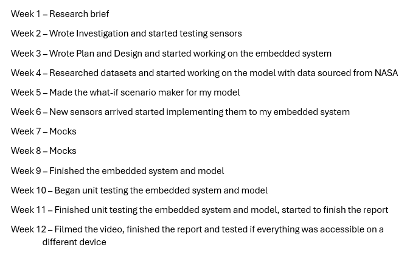
    <h2>The code (Basic)</h2>
    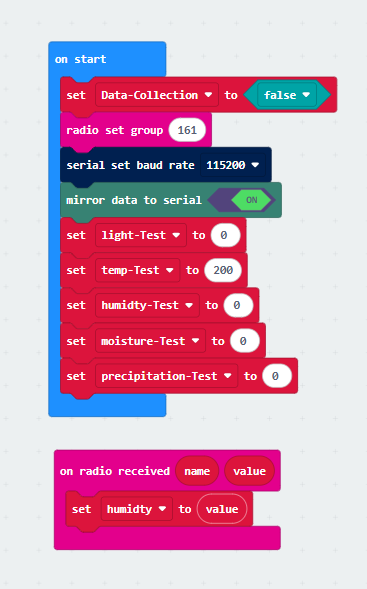
    <p>In the “on start” block, I have a variable called “Data-Collection” which can toggle the embedded on/off. The extension Data Logger” allows all sensor values to be sent in one string through serial which later gets split in a python file. I have test versions for each variable to make sure the LEDs get turned on at the appropriate time.</p>
    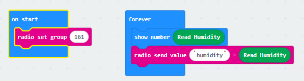
    <p>A secondary MicroBit sends the humidity reading (as a percentage) to my main MicroBit using “Radio”.</p>
    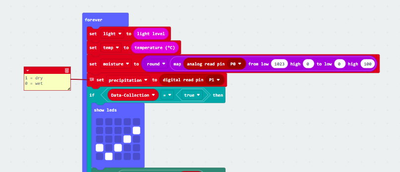
    <p>In the “forever” block, each variable gets updated instantly with the latest sensor data. The raw soil moisture data would read between 0-1023 (the higher the number, the dryer the soil), so I used “map” to convert the raw data into a percentage where the lower the number would indicate a dryer soil.</p>
    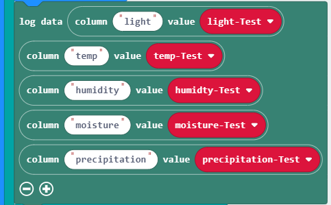
    <p>In the same “forever” block, Data Logger saves each piece of data into their respective columns and sends it to serial.</p>
    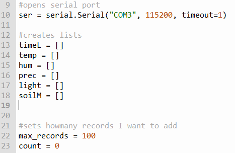
    <p>After importing my necessary modules, I used serial to establish a connection between the MicroBit and the python file. I created lists to store the data from the MicroBit which then can be sorted accordingly. I hard-coded the amount of records I want the csv to take.</p>
    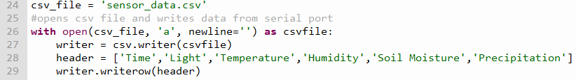
    <p>The csv file opens and allows the python programme to write on it, first creating headers.</p>
    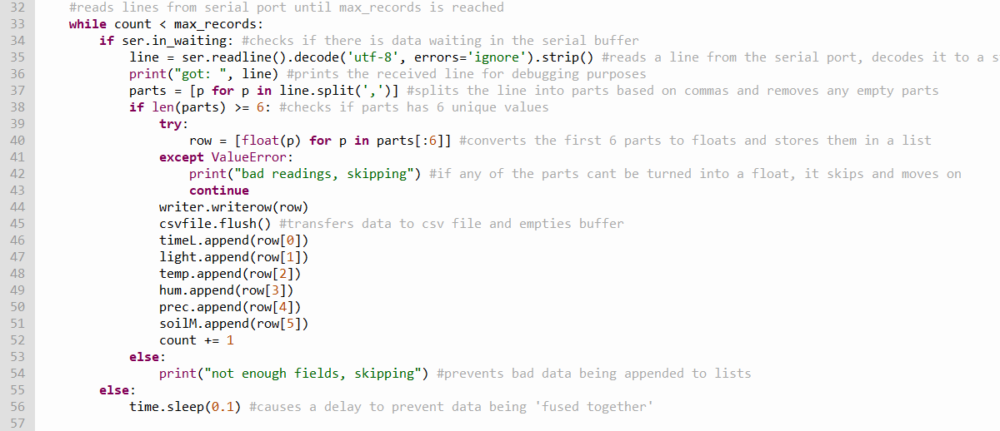
    <p>A while loop collects the hard-coded amount of records. A buffer prevents the data from getting ‘fused together’. Each pass checks if the line was split correctly and contains the appropriate data, when it does, the data gets added to the lists and is added to the csv. Any bad data is removed and doesn’t count as a pass.</p>
    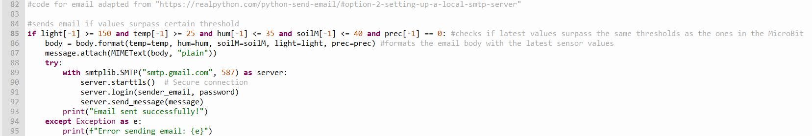
    <p>I check the latest piece of data from each list and check if they all surpass their unique thresholds, if all have passed the thresholds, an email gets sent to the mock fire department. This represents the embedded system sending the data to cloud storage wirelessly where it can be seen by the owners of the device and the device contacting the relevant authorities and owners. Below is an example of an email that might be sent.</p>
    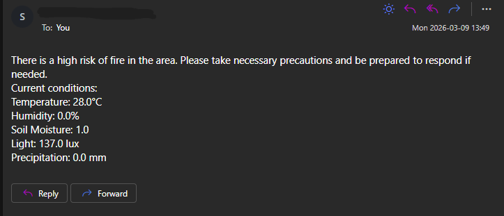
    <h2>The code (Advanced)</h2>
    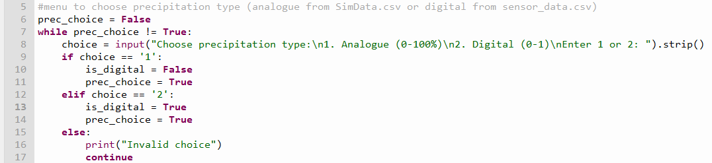
    <p>A menu prompts the user to select digital or analogue precipitation before the model starts.</p>
    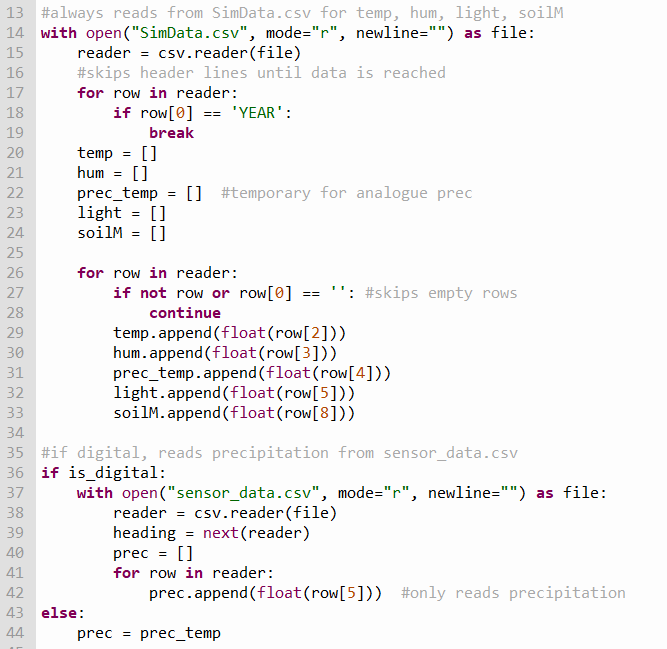
    <p>SimData.csv is primarily used in this model. Data from SimData is stored into lists where it will be used later. The “prec_temp” variable is used to store the precipitation values from SimData so that if the user chose digital precipitation, “prec_temp” would be discarded with the analogue data and the values from sensor_data.csv would be used, otherwise, analogue precipitation will be used.</p>
    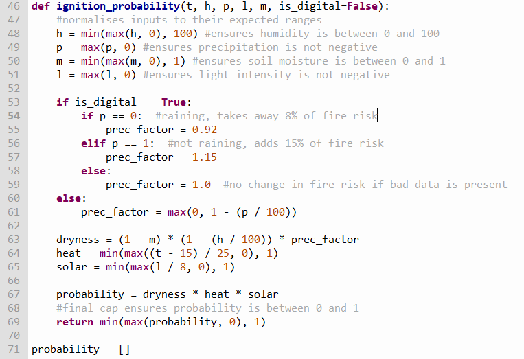
    <p>The ignition probability function receives each set of values and calculates a probability capped between 0 and 1. The equation was invented by me and has three components: dryness (affected by soil moisture, humidity, and precipitation), heat (affected by temperature), and solar (affected by light level). All three dryness sub-factors must be increased at the same time to produce high dryness. Heat contributes no risk below 15°C and reaches maximum risk above 40°C. Solar accounts for sunlight drying fuel such as leaves, a high solar value raises ignition probability greatly. For digital precipitation, the dryness factor is reduced by 8% if raining or increased by 15% if dry. The final probability is the product of all three components, meaning all must be elevated for a high overall risk.</p>
    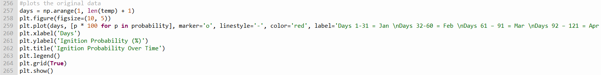
    <p>A graph plots the ignition probability for each day of 2020 in the Wicklow Mountains area. Probability is multiplied by 100 to convert it to a percentage. Below is a diagram when using all the data from SimData.</p>
    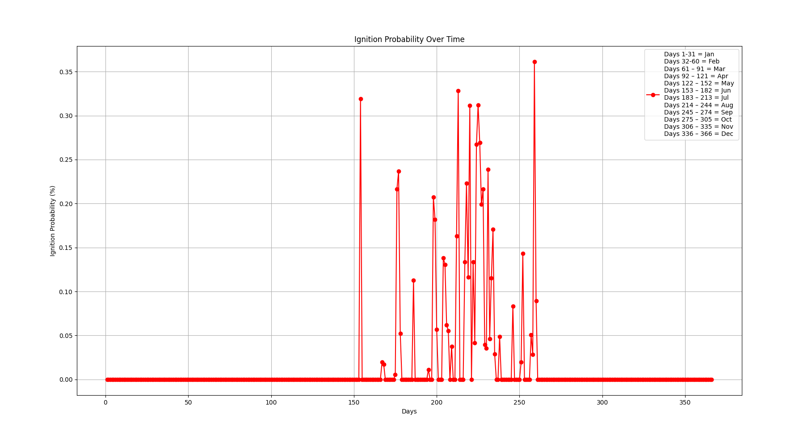
    </br>
    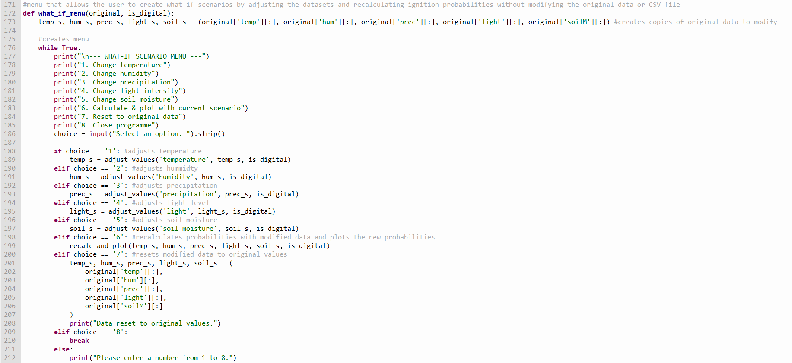
    <p>A function was created to display a menu which would allow users to input their own data to model a disaster risk scenario. The user can change the 5 variables, replot the graph once they changed the values, reset the data back to its original state and close the programme.</p>
    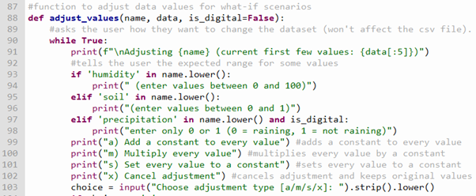
    <p>This function asks the user how they want to manipulate the data. The user can add/subtract or multiply values or set every value to a constant.</p>
    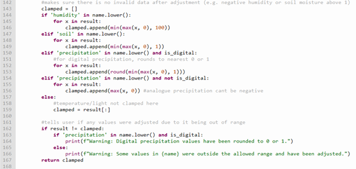
    <p>In the same function, I clamp any data that has reached outside of its range (e.g. soil moisture can’t be greater than 1). The programme then tells the user if any values had to be adjusted.</p>
    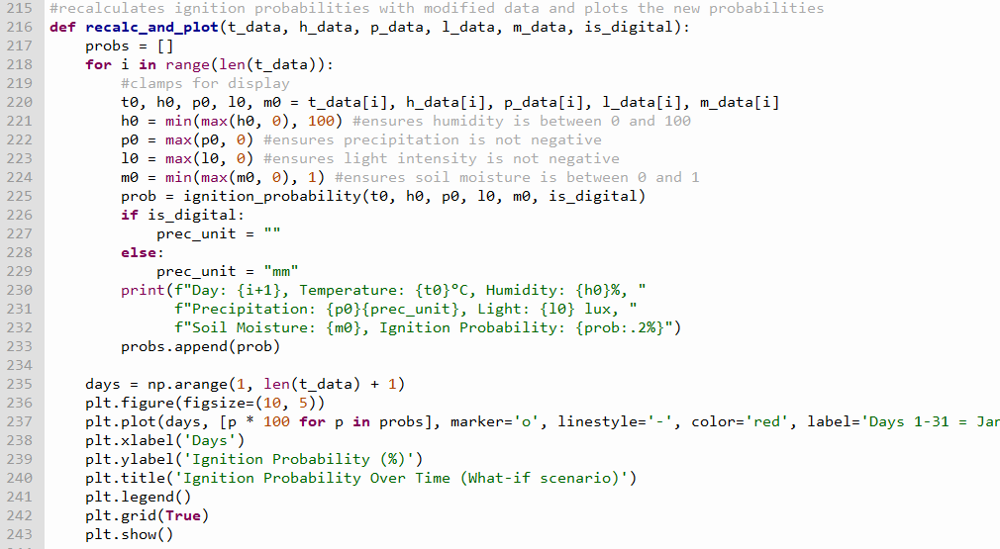
    <p>The final function in my model recalculates the ignition probability and graphs it for the user to see. Below is a graph made by the what-if scenario maker with extreme values being set.</p>
    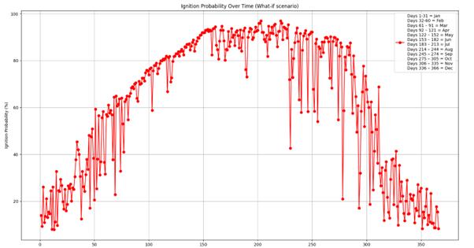
    <h2>The problem</h2>
    <p>When the MicroBit was sending data to the python file, and the values have succeeded the thresholds, an alarm would sound, but the data would stop being sent whilst the alarm was sounding. To fix this, I used a loop that checks every 2 seconds if the thresholds have been reached, this fixed my problem. Below shows a comparison in the code that demonstrates the fix:</p>
    
    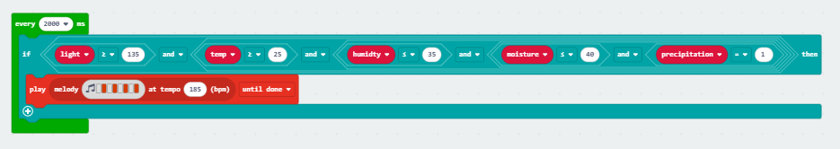
    <h2>Testing</h2>
    <p>I had a separate MicroBit file to conduct testing on my sensors and LEDs. I also got 2 soil samples, 1 dry and 1 wet, in pots to conduct testing for the soil moisture sensor. To test the precipitation sensor, I wetted a paper towel and rubbed it on the sensor. The humidity sensor was tested by breathing on it.  Below is a table of my unit testing:</p>
    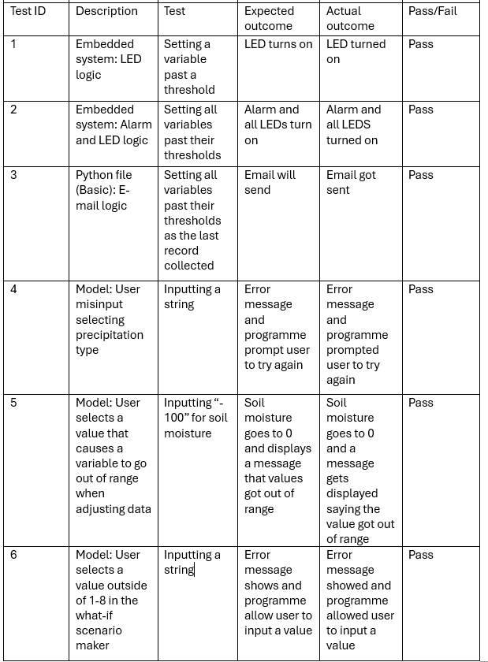
    <a href = "index.html">Home</a> </br>
    <a href = "e.html">Evaluation --></a>
</body>
</html>